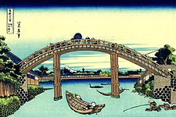
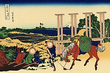
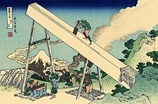

Ukiyo-e Paisagístico - "Trinta e Seis Vistas do Monte Fuji" de Hokusai: Uma Jornada Visual Pelas Estações e Emoções
Katsushika Hokusai, um mestre indiscutível da arte ukiyo-e, deixou um legado eterno com sua série magistral "Trinta e Seis Vistas do Monte Fuji". Criada durante o período Edo, esta coleção não apenas captura a majestade da montanha icônica, mas também transcende o tempo, levando os espectadores a uma jornada visual através das estações do ano e das emoções humanas. A série, composta por 46 gravuras (originalmente planejadas como trinta e seis, mas estendidas devido à popularidade), revela o Monte Fuji em diferentes perspectivas e ambientes. Hokusai habilmente incorpora elementos naturais, urbanos e culturais em suas composições, oferecendo um retrato multifacetado do Monte Fuji e sua relação com o mundo ao seu redor. Cada impressão é uma obra-prima por si só, mas algumas destacam-se pela sua notável originalidade. "A Grande Onda de Kanagawa", possivelmente a gravura mais famosa da série, personifica a força bruta da natureza, equilibrada pela fragilidade das embarcações que enfrentam as ondas imponentes. Outras gravuras como "Chuva Repentina em Atami" e "A Caminho da Chuva no Santuário Kameyama" capturam a beleza melancólica das paisagens sob a chuva, revelando a habilidade única de Hokusai em transmitir atmosferas e emoções. A série "Trinta e Seis Vistas do Monte Fuji" transcende a mera representação geográfica. Hokusai, com sua técnica refinada e habilidade narrativa, transforma cada imagem em uma história visual. Seja retratando pescadores enfrentando o Monte Fuji nevado, vilarejos aninhados entre colinas ou o próprio Fuji em diferentes formas, cada cena é uma ode à beleza efêmera e à complexidade da existência humana. A influência duradoura desta série é evidente na sua presença contínua nas galerias de arte e nas mentes dos admiradores de arte em todo o mundo. "Trinta e Seis Vistas do Monte Fuji" é uma expressão artística que vai além da contemplação da natureza; é uma celebração da vida, da transformação das estações e da eterna majestade do Monte Fuji na imaginação coletiva.
Obra Trinta e Seis Vistas do Monte Fuji
| Fukagawa Mannen-bashi shita | Bushū Senju | Tōtōmi sanchū |
|  |  |  |